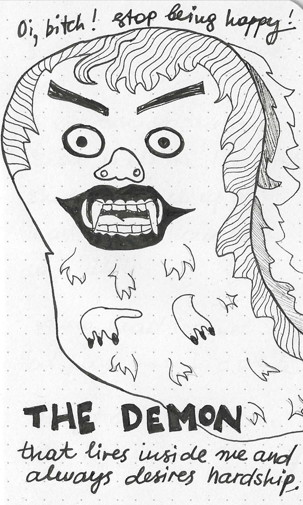

09.2026
The little demon
I think there is a little demon living inside my head. For some reason I imagine its a male.
He doesn't do anything particularly useful. He is just this flatmate who has been there for a long time, and you are really used to him, but it is definitely time to move on. One of us has to move out.
He mostly waits until I am having a nice day and then whispers something like "this is probably going to end badly" into my ear.
Sometimes things are actually going quite well.
And yet there he goes.
"Oi, bitch. Stop being happy."

Oh, just how I wish this demon would get a hobby.